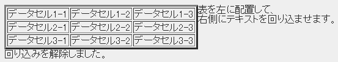

| |
| ＜br clear="★"＞ |
| ★・・・left、right、all |
| 要素区分 インライン |
| HTMLで回り込みを解除するには、<br>タグにclear属性をしていします。指定できる |
| 値は次のとおりです。 |
| left 表が左側にあるとき（<table align="left">）の回り込みを解除 |
| right 表が右側にあるとき（<table align="right">）の回り込みを解除 |
| all どちら側の配置に対する回り込みも解除 |
| none 回り込みを解除せずに、改行のみ行う（初期値） |
タグ リンク |
| 表（テーブル）を作りたい |
| 表の枠線を表示したい |
| 行や列に見出しを付けたい |
| キャプションを付けたい |
| キャプションの位置を指定したい |
| 行をグループ化したい |
| 列をグループ化したい |
| 列に属性を指定したい |
| 縦方向のセルを連結したい |
| 横方向のセルを連結したい |
| 表の位置を指定したい |
| 表に対する回り込みを解除したい |
<table border="3" align="right">
<tr><td>データセル1-1</td>
<td>データセル1-2</td>
<td>データセル1-3</td></tr>
<tr><td>データセル2-1</td>
<td>データセル2-2</td>
<td>データセル2-3</td></tr>
<tr><td>データセル3-1</td>
<td>データセル3-2</td><td>データセル3-3</td></tr>
</table>
<p>表を右に配置して<br>左側にテキストを回り込ませます。
<br clear="right"> 回り込みを解除しました。</p>
